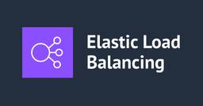

DevelopersIO
https://dev.classmethod.jp
DevelopersIOは、AWS、クラウド、生成AI、データ分析、アプリ開発などの技術情報から、DXやイベントレポート、SaaSやPython、Google Cloudなど多彩なトピックを紹介するクラスメソッドのオウンドメディアです。
フィード

ELB for Envoy を NLB 経由の PrivateLink で別 VPC に公開してみた
DevelopersIO
プロキシの IP を NLB の ip ターゲットに登録し、その NLB をエンドポイントサービスにすると、別 VPC の EC2 からのリクエストに PrivateLink 経由で固定応答が返りました。NLB はプロキシの IP の変更に自動では追従しないので、追従する仕組みが必要でした。
22分前

無料提供が始まった Basic OpenTelemetry enrichment を有効にして Lambda のメトリクスを PromQL で取得してみた
DevelopersIO
start-otel-enrichment で、課金対象の resource tag enrichment（取り込みに1GB あたり $0.50）を省いた Basic OpenTelemetry enrichment を有効にして、Lambda の Invocations を PromQL で取得できました。
1時間前
CloudWatch の AWS 提供メトリクスに基本エンリッチメントの概念が生まれ、追加料金無しで OpenTelemetry メトリクス化できるようになりました（リソースタグも含める場合は追加課金）
DevelopersIO
PromQL を使わない理由がどんどん消えていく
3時間前
ELB for Envoy の IP 1 つあたりの帯域と同時接続数を測ってみた
DevelopersIO
Elastic Load Balancing (ELB) for Envoy 経由で Nginx の HTTP 配信性能を m9g.2xlarge で測ると、IP 1 つあたり約 12 Gbps、20,000 の同時接続も可能でした。負荷をかけ始めて約 1 分 15 秒後に IP が追加されました。
3時間前

AWS re:Invent 2026 を日本から学び、楽しむ方法 ― ライブ配信の登録、日本時間のスケジュール、振り返りイベントまで #AWSreInvent 1
1
DevelopersIO
現地に行かなくても AWS re:Invent 2026 は日本から学べます。無料のライブ配信「Live from re:Invent」の登録手順、日本時間のキーノートと配信スケジュール、日本語で質問できる AI でのセッション探し、Black Belt 速報や re:Growth、JAWS-UG などの振り返りイベントをまとめました。
4時間前

集約したCloudWatch Alarmの通知に発生元のアカウントIDを出すなら、Step Functionsで取り出そう
DevelopersIO
集約したCloudWatch Alarmの通知に発生元のアカウントIDを出そうとしたところ、EventBridgeのInput Transformerでは取り出せませんでした。取り出せなかった理由と、代わりにStep Functionsで取り出してから通知に渡す構成をまとめます。
7時間前
Amazon RDS for PostgreSQL 18.7 を試してみた
DevelopersIO
PostgreSQL コミュニティが 2026年11月12日に公開したマイナーバージョンが、RDS で利用可能になりました。52 件の脆弱性が修正され、14 系は 14.25 が最終リリースになります。
14時間前
ELB for Envoy 経由で Aurora（PostgreSQL / MySQL）への DB 接続を試してみた
DevelopersIO
Aurora PostgreSQL は、ELB for Envoy の tcp_proxy 経由で EC2 から接続できました。Aurora MySQL は、フィルターのタイムアウト後も接続を維持する指定により接続できました。
15時間前
[アップデート] Generative AI Use Cases（GenU）v5.6.0 で管理者が全ユーザーのトークン数と概算料金を管理できるようになりました
DevelopersIO
盾マークみたいなところから使える
15時間前
CloudWatch エージェントのログ収集パスを変更する手順（SSM パラメータストア + Run Command）
DevelopersIO
CloudWatch エージェントの設定をSSMパラメータストアで管理している場合、EC2（Windows）でログ収集パスを変更する手順を、パラメータ編集からRun Commandでの反映、動作確認まで紹介します。
17時間前
Elastic Load Balancing for Envoy の ddos_protection と AWS WAF 連携を試してみた
DevelopersIO
ddos_protection の SYN cookie mode を continuous にすると、SYN-ACK の形が変わり、不正な ACK に SYN-ACK を再送しなくなりました。AWS WAF の Block ルール（IP 指定、レートルール）による遮断も確認できました。
18時間前

【2027 Japan All AWS Credentials Engineers】 Microcredentialsを受験して、バッジを取得してみた！
DevelopersIO
2027年から AWS 認定に加えて Microcredentials の取得が条件になります。実際に「AWS サーバーレスの実証」を受験して合格しましたので、流れや難易度、受験してみた感覚をお届けします！
18時間前

CodeCommit のマージ方式（Fast Forward / 3-way / Squash）の違い、複数人が続けてマージするとエラーになる理由
DevelopersIO
複数人が AWS CodeCommit の main ブランチへ続けてマージするときに、2人目以降がエラーになった経験はありませんか？Fast Forward、3-way、Squash の3つのマージ方式の違いと、それぞれの使い分けについて図を交えて解説します。
18時間前

OpenSearch Service の新エンジンがサポートした join、高カーディナリティ集計、query DSL を試してみた
DevelopersIO
単一ノードの新エンジンドメインで、100 万件のログに対し、PPL と SQL による約 51 万件の span との join、PPL の lookup、distinct な値の集計を実行しました。いずれも 1 秒未満で返り、query DSL の _search も 2 つのクエリで期待どおりの件数を返しました。
19時間前
Amazon OpenSearch Service が対応した OpenSearch 3.9 を試してみた
DevelopersIO
OpenSearch 3.9 でサポートされた half_float 型（1 次元 16 bit）、bf16 エンコーダ、2 bit・4 bit のスカラー量子化について、インデックスサイズの削減などを試しました。
20時間前

NVIDIAのVLM「Cosmos 3」をローカルで触ってみた
DevelopersIO
NVIDIAのオープンなVLM「Cosmos 3」を、DGX Spark上のローカル環境でセットアップしてみました。uvのインストールから公式サンプルの実行、自分で撮った猫の画像を読ませるところまで、ハマったポイントも含めて実際に試した結果をお伝えします。
21時間前

【登壇レポート】 勉強会 opsmethod#5 「Claudeを活用した、 運用報告書作成の自動化・効率化」というタイトルで登壇しました！
DevelopersIO
Claudeで運用報告書作成を自動化する方法について、勉強会での登壇内容をご紹介します
21時間前
CodeCommitのプルリクで変更したファイルだけlint、formatする
DevelopersIO
CodeCommitでプルリクエストを作成、更新した際に、EventBridgeとCodeBuildを使ってlinterとformatterを実行する仕組みを構築してみました。この記事では、変更したファイルのみを対象とする方法について紹介しています。
21時間前

非エンジニアの私がCopilotでスキルを作ってみた
DevelopersIO
Copilotに追加されたAgent Skils機能を試してみました。会社のテンプレートをスキル化することで、プレゼン資料作成時にAIが定型フォーマットやガイドラインを自動で反映できるようになります。その手順を紹介します。
1日前

[アップデート] AWS CloudFormation でも ELB for Envoy を作成できるようになりました
DevelopersIO
話題の ELB for Envoy が早速 CloudFormation に
1日前
WAF Automatorで使用技術に応じた緊急ルールセットを受け取れるようになりました
DevelopersIO
WAF Automatorの緊急ルール配信方式がアップデートされ、使用技術に応じたルールセットを受け取れるようになりました。主な変更点に加え、管理画面での使用技術の選択方法と、個別ルールの動作を切り替える手順を紹介します。
1日前

Splunk 公式 MCP Server を導入して Claude から SPL を書かずにログ調査してみた
DevelopersIO
Splunk MCP Serverを導入してClaudeから自然言語でCloudTrailを調査してみました。SPLを1行も書かずに調査が成立するだけでなく、曖昧な指示を調査条件に翻訳し、データのノイズに気づいて検算するなど、ログ分析の設計そのものをAIが肩代わりしてくれます。権限設計のポイントも含めて、導入手順から実際の活用まで紹介します。
1日前

[Kiro] I tried Kiro Crew's custom agents - agent orchestration system
DevelopersIO
I tested Kiro Crew's custom agents, the Kiro's agent orchestration system~
1日前
ELB for Envoy のアプリケーションログを確認してみた
DevelopersIO
Elastic Load Balancing for Envoy のプロセスのログ（application log）について、ログレベルごとの出力、コンポーネント別のレベル、1行に含まれるログ項目、text と JSON の書式を確認しました。
2日前
ELB for Envoy のアクセスログを OTLP で CloudWatch Logs に保存してみた
DevelopersIO
open_telemetry の access logger から、設定に認証情報を書かずに、SigV4 の署名で東京リージョンの CloudWatch Logs の OTLP エンドポイントへアクセスログを送って保存できました。保存されるログ形式や項目の設定もまとめています。
2日前

[アップデート] AWS Quick でエージェント・スキル・コネクタ・フローをまとめてインストールできる「プラグイン」が使えるようになったので試してみた
DevelopersIO
AWS Quick の新機能「プラグイン」を試しました。エージェント・スキル・コネクタ・フローをまとめて 1 回でインストールでき、自作のスキルやフローもプラグインにしてチームへ共有できます。公式プラグインの導入から、カスタムプラグインの作成・公開・削除までの手順と、追加できる機能の条件などの注意点をご紹介します。
2日前

Step Functions で Lambda MicroVMs のジョブを実行してみた
DevelopersIO
MicroVM の起動、ジョブの実行、終了を、Step Functions のステートマシン（SDK 統合と JSONata）で組めました。同じ MicroVM に送った2つのジョブはファイルとメモリを共有できました。ARM と x86 の MicroVM を並列に動かして docker build も実行できました。
2日前
Kiro Enterprise で GPT 6.2 Astra を Preview として利用できるようになりました
DevelopersIO
2026年11月25日に Preview の展開が始まった OpenAI の GPT 6.2 Astra を、Kiro Enterprise の組織で、管理画面の Model availability から有効にして試しました。Kiro IDE のモデル選択に表示され、Kiro CLI では `--model` の指定で応答が返りました。
2日前
Cloudflare Email Sending が Free プランで使えるようになったので試してみた
DevelopersIO
Workers Free プランのアカウントでも、事前に承認した verified destination address 宛てならメールを送信できるようになりました。実際に送ったメールは、SPF・DKIM・DMARC がすべて pass で Gmail と SES（Email Receiving）に届きました。
2日前
[アップデート] 新しくなった AWS Quick の Flows で、決定論的ステップとバリデーションを試してみた 1
DevelopersIO
AWS Quick の Flows が新しくなり、チャットで手順を説明するとフローが作られるようになりました。チャットで手順を説明してフローを作り、コードで計算する決定論的ステップと、出力をルールで検査して再試行するバリデーションの動きを確認。エージェントとの使い分けや注意点も解説します。
2日前